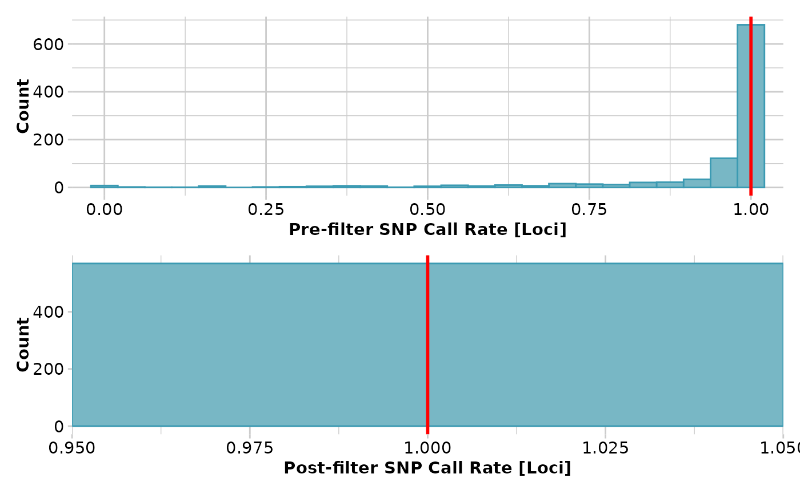
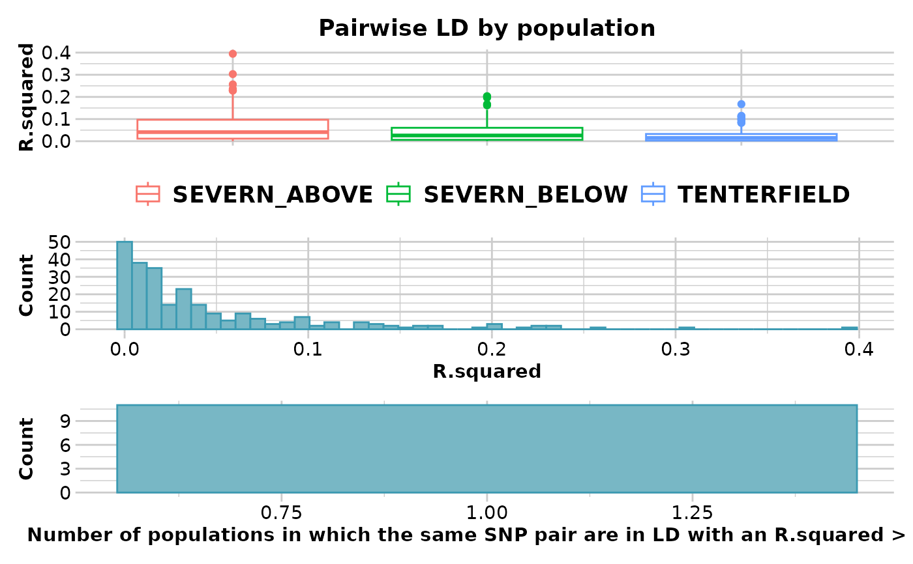
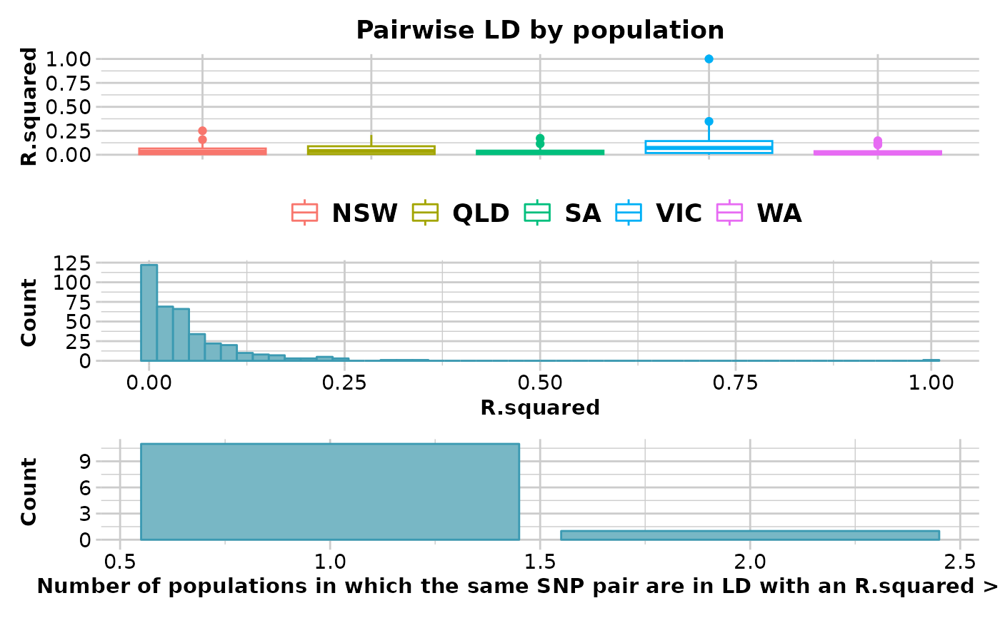

Filters loci based on linkage disequilibrium (LD)
gl.filter.ld.RdThis function uses the statistic set in the parameter stat_keep from
function gl.report.ld.map to choose the SNP to keep when two
SNPs are in LD. When a SNP is selected to be filtered out in each pairwise
comparison, the function stores its name in a list. In subsequent pairwise
comparisons, if the SNP is already in the list, the other SNP will be kept.
Arguments
- x
Name of the genlight object containing the SNP data [required].
- ld_report
Output from function
gl.report.ld.map[required].- threshold
Threshold value above which loci will be removed [default 0.2].
- pop.limit
Minimum number of populations in which LD should be more than the threshold for a locus to be filtered out. The default value is half of the populations [default ceiling(nPop(x)/2)].
- verbose
Verbosity: 0, silent or fatal errors; 1, begin and end; 2, progress log; 3, progress and results summary; 5, full report [default 2, unless specified using gl.set.verbosity].
See also
Other filter functions:
gl.filter.allna(),
gl.filter.callrate(),
gl.filter.heterozygosity(),
gl.filter.hwe(),
gl.filter.locmetric(),
gl.filter.maf(),
gl.filter.monomorphs(),
gl.filter.overshoot(),
gl.filter.parent.offspring(),
gl.filter.pa(),
gl.filter.rdepth(),
gl.filter.reproducibility(),
gl.filter.secondaries(),
gl.filter.sexlinked(),
gl.filter.taglength()
Author
Custodian: Luis Mijangos -- Post to https://groups.google.com/d/forum/dartr
Examples
test <- bandicoot.gl
test <- gl.filter.callrate(test,threshold = 1)
#> Starting gl.filter.callrate
#> Processing genlight object with SNP data
#> Warning: Data may include monomorphic loci in call rate
#> calculations for filtering
#> Recalculating Call Rate
#> Removing loci based on Call Rate, threshold = 1
#>

#> Completed: gl.filter.callrate
#>
res <- gl.report.ld.map(test)
#> Starting gl.report.ld.map
#> Processing genlight object with SNP data
#> Calculating pairwise LD in population NSW
#> Calculating pairwise LD in population QLD
#> Calculating pairwise LD in population SA
#> Calculating pairwise LD in population VIC
#> Calculating pairwise LD in population WA
#>

#> Completed: gl.report.ld.map
#>
res_2 <- gl.filter.ld(x=test,ld_report = res)
#> Starting gl.filter.ld
#> Processing genlight object with SNP data
#> Warning: Data may include monomorphic loci in call rate
#> calculations for filtering
#> Summary of filtered dataset
#> LD for loci > 0.2
#> Original No. of loci : 127
#> No. of loci retained: 21
#> No. of populations: 5
#> Completed: gl.filter.ld
#>
res_3 <- gl.report.ld.map(res_2)
#> Starting gl.report.ld.map
#> Processing genlight object with SNP data
#> Calculating pairwise LD in population NSW
#> Calculating pairwise LD in population QLD
#> Calculating pairwise LD in population SA
#> Calculating pairwise LD in population VIC
#> Calculating pairwise LD in population WA
#>

#> Completed: gl.report.ld.map
#>